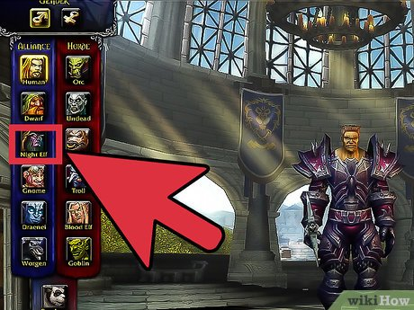

Clases
Desde caballeros en resplandeciente armadura hasta sombríos acechadores y sagaces hechiceros, cada clase de World of Warcraft presenta retos y estilos de juego únicos. Elije tu destino.
- Los guerreros se equipan con cuidado para el combate y se enfrentan a sus enemigos de frente, dejando que los ataques resbalen contra su pesada armadura. Usan diversas tácticas de combate y una gran variedad de tipos de armas para proteger a los combatientes menos hábiles. Los guerreros deben controlar cuidadosamente su ira (el poder detrás de sus ataques más fuertes) para maximizar su efectividad en el combate.
- Los paladines se colocan justo delante de sus enemigos, confiando en su pesada armadura y la sanación para poder sobrevivir a una lluvia de ataques. Ya sea con enormes escudos o con aplastantes armas a dos manos, los paladines pueden aguantar zarpas y espadas de sus compañeros más débiles, pero deben usar la magia sanadora con cuidado para asegurarse de que se mantienen en pie.
- Los cazadores luchan contra sus enemigos a distancia o de cerca y ordenan a sus mascotas que ataquen mientras preparan sus flechas, disparan sus armas de fuego o blanden sus armas de asta. Si bien sus armas son efectivas a corta y larga distancia, los cazadores son también extremadamente ágiles. Son capaces de evadir o entorpecer a sus enemigos para controlar el espacio de combate
- Los pícaros a menudo inician sus batallas entre las sombras, comenzando con sanguinarios golpes cuerpo a cuerpo. En batallas largas, usan ataques sucesivos, cuidadosamente seleccionados para preparar al enemigo para el golpe final. Los pícaros deben tener especial cuidado al seleccionar a sus objetivos para no malgastar sus ataques de combo y deben saber cuándo esconderse o huir si la batalla se vuelve contra ellos.
- Los sacerdotes usan poderosa magia de sanación para asegurarse de que tanto ellos como sus compañeros no son derribados. También controlan poderosos hechizos ofensivos a distancia, pero pueden verse sobrepasados por los enemigos debido a su fragilidad física y a su ligera armadura. Los sacerdotes más experimentados combinan el uso de sus hechizos ofensivos y de control con la importancia de mantener vivo al resto del grupo
- Durante el combate, el chamán coloca totems de control y daño en el suelo para maximizar su efectividad y ponerle las cosas más difíciles a los enemigos Los chamanes son lo suficientemente versátiles para luchar contra los enemigos de cerca o a distancia, pero los chamanes sabios eligen su camino de ataque basado en los puntos fuertes y débiles de sus enemigos
- Los magos destruyen a sus enemigos con encantamientos arcanos. Aunque controlan poderosos hechizos ofensivos, los magos son frágiles y su armadura es ligera, lo que los hace particularmente vulnerables a los ataques a corta distancia. Los magos sabios usan sus hechizos con cuidado para mantener a sus enemigos a distancia o retenerlos en el lugar
- Los brujos incineran y destruyen a los enemigos debilitados con una combinación de atroces enfermedades y magia oscura. Mientras que sus mascotas les protegen y mejoran, los brujos golpean a los enemigos desde la distancia. Ya que son taumaturgos físicamente débiles desprovistos de una poderosa armadura, los brujos astutos dejan que sus esbirros se lleven el grueso de los ataques enemigos para salvar su propio pellejo
- Los druidas poseen una gran variedad de estilos de combate. Pueden llevar a cabo todos los roles: sanación, tanque, daño cuerpo a cuerpo y daño a distancia. Es vital que los druidas adopten la forma adecuada para cada situación ya que cada forma conlleva un propósito diferente
- Los caballeros de la Muerte se enfrentan a sus enemigos de cerca, asestando golpes con sus armas con magia oscura que vuelve a los enemigos vulnerables o les inflige daño con poder oscuro. Arrastran a los enemigos a enfrentamientos uno contra uno, obligándoles a concentrar sus ataques lejos de sus compañeros más débiles. Para evitar que sus enemigos escapen de sus garras, los caballeros de la Muerte deben ser conscientes del poder que invocan de las runas y controlar sus ataques de forma apropiada.
